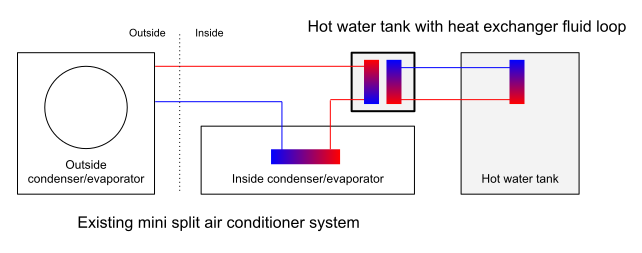

Mini split air conditioners are great little air-source heat pumps that can work in the reverse and provide heating to the building, too. For highly insulated houses built according to the Passive House standard they technically provide enough power to support both space and hot water heating.
Passive houses require a heating load of only 10W per square meter or 15kWh of total energy per square meter per year to condition the inside air. That means that technically a 100m2 house requires only a 1kW heater which can be easily served with the smallest mini split units on the market that have a total heating/cooling power of 3kW.
Wouldn’t it be great if the remaining 2kW could be used for heating the hot water? However, such units are pretty much non-existent or they are way over-sized and expensive for the needs of a highly efficient house.
So I’m starting a project to add an additional 3kW plate heat exchanger to the indoor gas/fluid line of the cheapest mini-split air conditioner with the heating functionality, to transfer the heat to another fluid loop passing through a 1m2 heat exchanger of a 100 liter hot water tank:

Design Questions
- Does it need a bypass for the plate heat exchanger to decouple the water tank from the air-con while the unit is in the cooling mode? Or is it sufficient to just turn off the circulation pump for the hot water tank heat exchanger?
- What are the flow rates for the hot water tank heat exchanger loop with a 1m2 tank heat exchanger surface?
Existing Solutions
There are several air-source heat pumps that support hot water heating:
- Gree Versati III
- Daikin Altherma
Note that none of them enable space heating via a refrigerant-to-air heat exchanger found in traditional mini splits.
Proposed Components
1. Mini Split with Heating Support
Midea Blanc, AlpicAir Premium Pro, Gree Lomo Nordic or similar costing around EUR 500. Requires knowledge of the communications protocol with the outside unit to control the device without relying on the inside unit.
I ended up getting the Gree Amber Nordic GWH09YD-S6DBA1 which works well down to -30℃ (-22℉).
2. Hot Water Tank with Heat Exchanger
Kospel SWK100 hot water tank (around EUR 400) with an internal heat exchanger loop area of 1m2 or more.
3. Plate Heat Exchanger
Eko Air NB-238 brazed plate heat exchanger (around EUR 175) with support for 3MPa (30bar) pressure and 3/8″ SAE flare connectors for the gas line and G3/4″ connector for the water loop. The particular unit has a maxium float rate of 5 m3/h.
4. Circulation Pump for the Hot Water Heating
Wilo-Yonos PICO circulation pump (around EUR 130) with support for variable flow rate. Ideally with electronically adjustable flow rate.
5. Pipes, Expansion Tanks, Valves and Connectors
TODO: List them all.
Next Steps
- ✅ Purchase Eko Air NB-238 heat exchanger with 30 plates.
- ✅ Purchase and reverse-engineer Gree Amber Nordic GWH09YD-S6DBA1 air-source heat pump.
- TODO: Calculate the heat exchanger area for the hot water tank to match the power of the heat-pump.
Last updated: February 13, 2022.
Suggested Reading
- Why air to water heat pumps are a market opportunity for hydronic professionals videos part 1 and part 2 by John Siegenthaler.
Existing Solutions
AHUcom
A few month after I started researching this idea, I found AHUcom which does the following:
AHUcom electronic communication module allows you to connect GREE brand outdoor unit from U-Match Series 5 to any air handling units equipped with direct expansion air exchanger and drive it via any control system.
The connection with the outdoor unit is happening via two wires labeled A and B and it is not clear if those used for pure RS485 or something custom.
Daikin Multi+ (Multiplus)
Ed in the comments found Daikin Multi+ which has an indoor hot water tank (EKHWET-BV3, installation manual PDF) connected directly to the refrigerant loop of the outdoor unit along with number of mini-split indoor units.
I think this would be really interesting for retrofit applications where people have radiators and a hot water tank as in the UK. Replace the radiators in the larger rooms with indoor units and have something like this power the radiators in the remaining rooms and heat the DHW.
Presumably a compromise on COP for heating but with good heat distribution and the benefit of heat pump hot water.
For retrofits with radiators there are air-to-water heat pumps such as Gree Versati and Daikin Altherma which can do both space heating and DHW. However, sizing such systems (especially when reusing the existing radiators) might be an issue if the buildings are not well insulated and require a relatively large heating load which make the system relatively inefficient.
So you are running the refrigerant through a brazed plate heat exchanger? I’ve used them on boiler systems, I guess that will work.
To me the holly grail of off grid, would be to drive a mini split heat pump directly from the solar panels. Make hay (heat) when the sun is shining, and the COP is the highest (for the day). Then store the heat in water. Which is 100% efficient in season. (All leaks in storage or transfer are just needed heat for the house.)
Would like to know how you did with this.
I,m headed down the same path.
Signature Solar has EG4 12k or 24k BTU hybrid AC/DC units with integrated MC4 connectors that can run directly off solar panels with no battery system required. When solar isn’t sufficient it can switch over to AC power. They are also rated 25 SEER which is pretty good.
Hello Karspars,
I find your project very interesting and found it whilst Googling with much the same thought in mind. The idea to achieve good results by tweaking and misusing somewhat cheaper existing stuff rather than buying expensive and over-the-top off-the-shelf always appealed to me.
The current gas-crises in the EU already triggered me to buy two 3,5 KW MHI single-split units for room heating.
For the warm water supply, your setup could be nice, no doubt here. I’m thinking to keep using of my gas heater for sanitary water only, until I find a good alternative (much like yours).
The controlling/software side would be the hardest for me to master, and I can imagine that that is the trickiest part. As I understand it, you just incorporate a plate heat exchanger in the evaportor feed line, and leave the usual inside-unit in place and operational. Then, the inside-unit would function as normal unit as long as there is no heat-exchange (no condensation) at the plate heat exchanger?
The plate heat exchanger would then just be an inactive part of the feed line inner volume (maybe asking some extra refrigirant to make up for that extra volume)?
As soon as colder water would flow through the plate-exchanger, it would start to exchange heat and the refrigirant will condensate. I can imagine that just a slight waterflow, and thus only slight heat exchange, would still enable the inside-unit to partly function and heat up air. However, I can imagine that the unit’s electronics/program would go “haywire” without your tweaking, and that programming can be quite a challenge.
Having an inverter-driven heat pump is certainly nice, but what I’m also asking myself is, whether or not the simplest outdoor unit could do much the same, be easier on the programming, and still be energy efficient, when used as below?
I ask myself, whether or not an outdoor unit has a certain “speed” at which it will always be most efficient (highest COP), regardless of the outside temperature and without any adjusting to a changing heat-need. If so, and now that water is involved (no heat surplus), then it might be best to try using it much like a “wood fired stove”? Just let it run as economically as possible and just live with the changes in heat-output.
I have a gas-fired central heating system. Suppose that I use only an outdoor unit and connect two plate-exchangers in series, one for central heating system water and one for sanitary water (like you do). Then, I would be able to direct the heat output towards either one by simply adjusting the secondary waterflows (I imagine). A small outdoor split-unit wouldn’t heat up the central heating system water much, but “what’s in the house is in the house”. And for sanitary water a small outdoor unit would work out just fine like in your setup. Then, it would be possible (am I right?) to just put an outdoor unit on a fixed slow economic pace and give sanitary water first priority, with all surplus heat flowing towards the central heating system. In essence. the central heating secondary pump would be on all the time, except when the sanitary water pump comes on. The outdoor unit’s “speed” could be manually set and changed if needed. It wouldn’t automatically adjust for changes in heat-need but would be more like a wood-fired stove, just heating in a steady pace. Would this make sense?
Another thing that I’m not sure of, is what partial or complete condensation in the plate-exchanger would do to the existing indoor unit. It would then receive liquid refrigerant like the outdoor unit is used to, and might not be able to cope with that? And existing internal safeguards (temperatures, pressures) might hinder?
Best regards,
Andre
This project is really interesting to me.
It looks like a dynamite way to have a low-ambient temperature, highly efficient pool heater.
Hi Karspars,
I found your project when researching
Daikin Multi Plus:
https://www.youtube.com/watch?v=NDQLXsfA6r8
Initially, it looks like the perfect solution for me and appears to be the same idea as your project.
A multi-split “air to air” outdoor unit with a water cylinder heated via refrigerant lines.
Unfortunately, I can’t find anyone actually selling it!
Thanks for sharing this — it looks exactly like this project! Maybe try reaching out to any of the Daikin sellers? They should be able to source it even if it isn’t listed on their website, yet.
The ideal system for a minisplit for water heating and AC would be using a VRV/VRF manifold that reduces the compressors workload. The water-heater exchanger is a highly efficient condenser. I believe you can just use the guts from a indoor head, set on heating to heat your water/refrigerant exchanger. Every minisplit manufacturer should supply a water heating loop for their heat pumps.
Thanks for pointing to VRF — I wasn’t aware of the term. That sounds like a great option for the outdoor units that are meant to serve only one indoor unit.
I wonder if the outdoor units for multi-zone systems have anything more than a manifold with a few electronic valves to open just the required lines…
Hello,
interesting project. Looking to do the same and found your blog when looking for sufficient brazed plate heat exchanger. You wrote 3MPa should be OK, and most web indicate R32 liquid pressure is about 3MPa. However R32 has critical pressure of 57.6bar and it is way higher then 3MPa.
Anyway want to ask, if there is any progress with you project?
Thanks for bringing this up! I haven’t moved forward with the project so that’s a timely callout — I’ll be sure to review this.
I hope you have the time to focus on this, as I think a single heat pump which provides hot water along with space heating and cooling could make a meaningful difference in the economic return of going all-electric.
When I played with this idea, I wondered if the space heating and cooling heat pump might be coupled with a standard electric resistance water heater of the sort that is common in the US, 150-225 liter, with upper and lower electric elements of 4-5 kW each. Both elements have adjustable aquastats; when the upper stat calls for heat, the upper element is turned on until the water reaches setpoint, at which time power is directed to the lower stat, which sends power to the lower element until water temp reaches the setpoint.
My thought was to remove the lower element and in its place install a direct exchange (DX) coil which is is incorporated into the refrigerant line immediately downstream of the compressor (and upstream of the reversing valve), so that it acts as a de-superheater. Whenever the compressor operates, whether for space heating or cooling, the heat pump delivers heat to the lower half of the water tank. The upper electric element continues to heat the upper half of the tank whenever the upper stat calls for heat, providing both a supplemental and backup energy source. The advantages are that the water heater tank is readily available and inexpensive, the cost of the DX coil should also be modest, and a significant fraction of annual water heating load would be free in summer or low cost in fall or spring due to high heat pump efficiency. Heat pump capacity might have to be increased to accommodate winter peak load, though there may be an opportunity to heat water during the day when space heating loads are not at peak.
Another feature that might add value, as well as complexity, would be to make the heat pump dual source, i.e., it pulls heat from (or sends heat to) outdoor air or a ground source heat exchanger, whichever provides greater efficiency.
I just found this air to water exchanger available in the US. I want to use a 3 ton mini-split outdoor unit to provide this unit with hot refrigerant. I have hydronic heat and an indirect tank for my existing gas boiler and domestic hot water now. I have excess solar and 14kW of batteries available to power the minisplit.
Hey – looks like Panasonic are offering something similar now, too. With heat recovery on the A2A to heat the water, which is nice. https://www.aircon.panasonic.eu/IE_en/happening/aquarea-ecoflex/